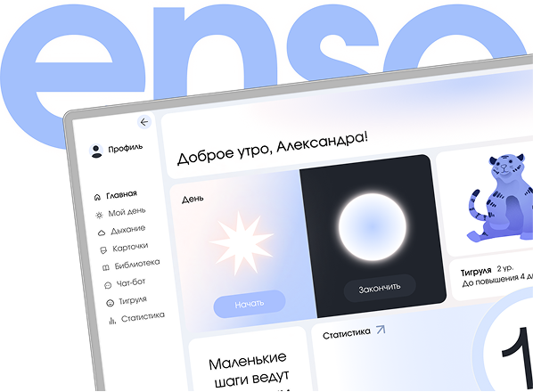
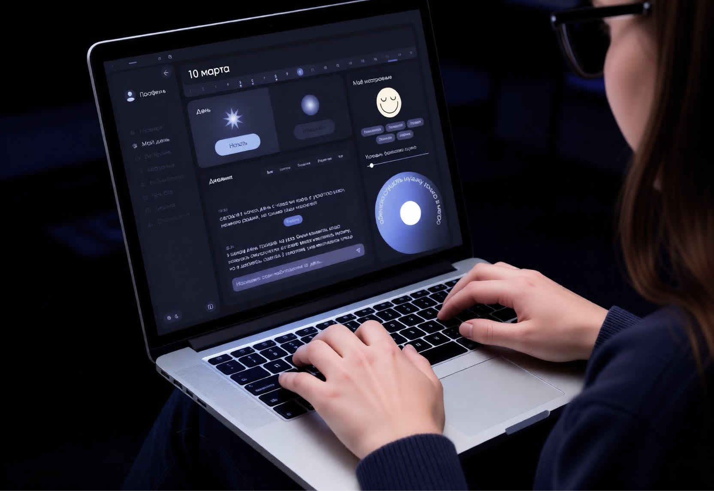
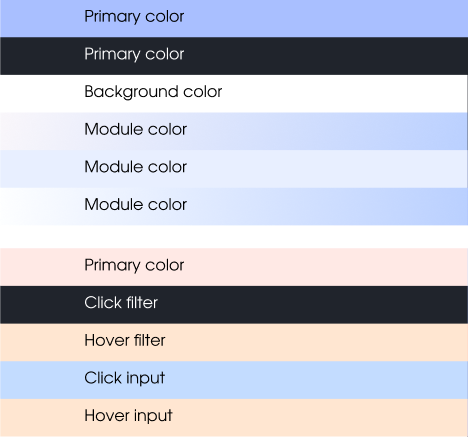
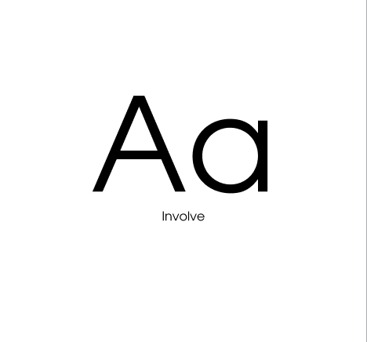
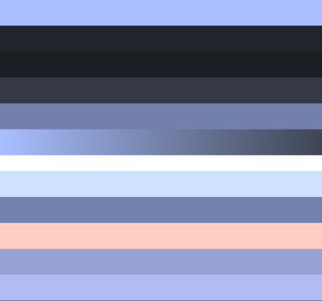
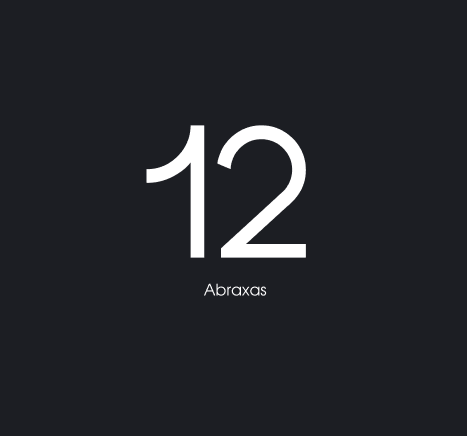
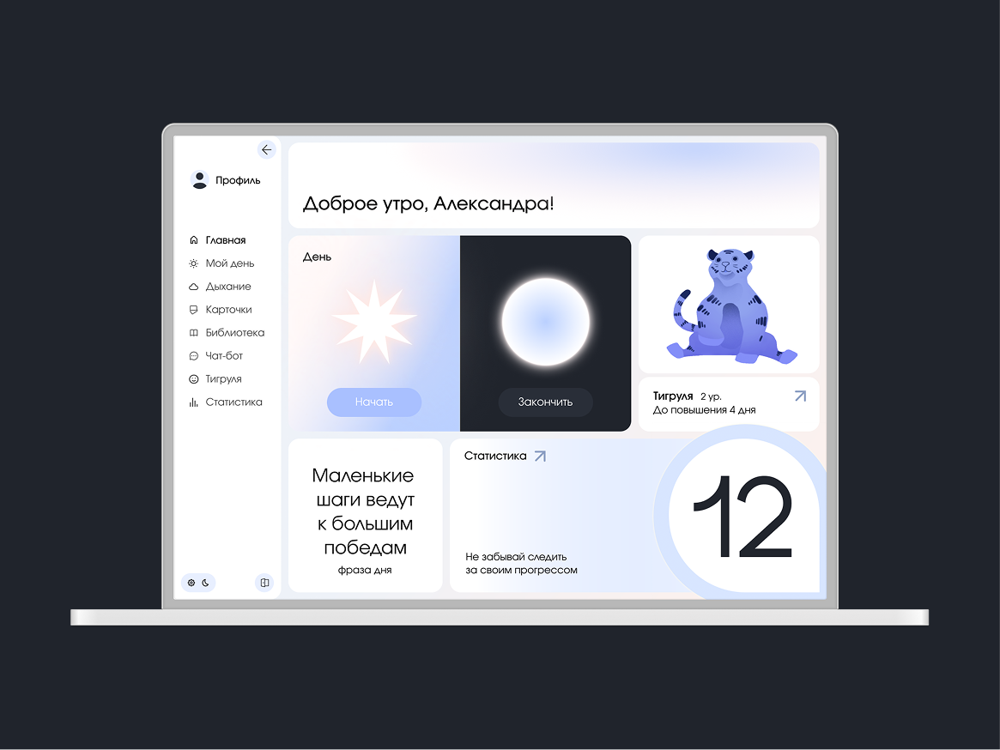

Enso — это приложение для отслеживания активности, которое помогает людям преодолеть зависимость от фонового шума, обучая их навыкам самоанализа и демонстрируя здоровый способ справляться с эмоциями.
Отличительными функциями являются ежедневные опросы о самочувствии, дыхательные упражнения, мини-игра, развитие персонажа, ИИ-помощник, дневник и статистика.
Тигруля, который растет вместе с пользователем, стал поддерживающим персонажем приложения. Он обучен и настроен на персонализацию пользователя и включает множество ежедневных взаимодействий.
2025



проблема
Пользователи часто теряют мотивацию из-за отсутствия немедленной обратной связи, трудностей в формировании привычек и недостаточной персонализации.
решение
Разработать приложение для отслеживания психического и физического состояния человека. Обеспечить мотивационный аспект пользования ресурсом. Приоритетом выделить удобный пользовательский интерфейс с уникальными функциями.





и я!